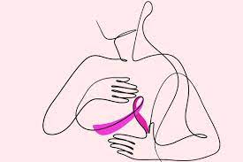

O que è o outubro rosa?
Outubro Rosa alerta sobre prevenção e diagnóstico precoce do câncer de mama.
relacionadas à prevenção e diagnóstico precoce do câncer de mama. O movimento, conhecido como
Outubro Rosa, é celebrado anualmente desde os anos 90.
Outubro Rosa, é celebrado anualmente desde os anos 90.
O Outubro Rosa surgiu nos Estados Unidos durante a década de 1990. Na época, vários estados daquele
país aproveitavam o mês de outubro para fazer ações isoladas em relação à prevenção e ao diagnóstico do câncer de mama.
O outubro rosa chegou no Brasil no ano de 2008 pela FEMAMA (Federação Brasileira de Instituições Filantrópicas de Apoio à Saúde da Mama)
A cada ano, quase 66 mil novos casos de câncer de mama são diagnosticados no país, de acordo com o Inca – Instituto Nacional do Câncer.
A FEMAMA acredita que é possível mudar esse cenário por meio de políticas públicas eficazes, que proporcionem acesso a diagnóstico ágil e
tratamento adequado. Luta por esses direitos há 15 anos a fim de alertar as mulheres sobre a doença.
O que causa o Cancêr de Mama?
O Cancêr de mama é uma doença que é mais frequente na mulher brasileira. Nesta doença, ocorre um
desenvolvimento anormal das células da mama, que multiplicam-se repetidamente até formarem um tumor maligno.
O câncer de mama não tem uma causa única. Diversos fatores estão relacionados ao aumento do risco de desenvolver
a doença, tais como: idade, fatores endócrinos/história reprodutiva, fatores comportamentais/ambientais e fatores genéticos/hereditários
Como identificar o câncer de mama
Os sintomas do câncer de mama podem variar de acordo com o paciente, mas alguns sinais merecem atenção especial:
Inchaço ou vermelhidão de toda ou parte de uma mama — mesmo que não se sinta um nódulo;-Nódulo único endurecido;
-Irritação ou abaulamento de uma parte da mama;
-Dor na mama ou no mamilo;
-Inversão do mamilo;
-Espessamento ou retração da pele ou do mamilo;
Secreção sanguinolenta ou serosa sendo expelida pelos mamilos;
-Linfonodos aumentados.
Para auxiliar no diagnóstico precoce do câncer de mama, é essencial realizar os exames de rotina dentro dos
intervalos recomendados, como a mamografia – anual a partir dos 40 anos – e ultrassom de mama – uma vez por ano a
partir dos 25 anos. No SUS, infelizmente, o exame é realizado em mulheres assintomáticas somente a partir dos 50 anos,
a cada dois anos, por isso é muito importante ficar atenta a todos os sinais do corpo. A qualquer sinal de alteração,
é preciso procurar o serviço de saúde mais próximo imediatamente.
Os estágios iniciais do câncer de mama
O estadiamento ou estágios do câncer de mama é o processo usado para determinar a extensão e gravidade da doença no organismo.
Ou seja, quanto o tumor cresceu desde a localização de origem, se atingiu ou não outros órgãos — se houve comprometimento desses
— e o quanto as células se parecem ou não com células normais.
Esse processo de estadiamento é feito após a realização de alguns exames, como os de imagem, com raio-X, ressonância magnética, tomografia
computadorizada e outros; ou por exames de laboratório e biópsia das células afetadas.
Em geral, o câncer de mama pode ser dividido em 5 principais estágios, de 0 a 4, sendo o zero o mais inicial e menos perigoso,
e os estágios 3 e 4 os mais graves, conhecidos como câncer de mama localmente avançado e câncer de mama metastático, respectivamente.
Estágio 0 – Câncer de mama in situ
É considerado o câncer de mama em estágio inicial mais precoce, e segundo a American Cancer Society (ACS),
também é chamado de carcinoma intraductal, carcinoma ductal in situ ou câncer não invasivo.
Neste estágio, os tumores são limitados aos ductos mamários. Apesar de poder se apresentar em uma ou em várias partes da mama,
por estar dentro do ducto que se estende por toda a mama, este câncer de mama em estágio inicial não entra em contato com os vasos
presentes na glândula mamária. Ou seja, ele não atinge outros órgãos.
Seu tratamento normalmente é realizado por uma cirurgia na área comprometida e, em alguns casos, radioterapia e hormonioterapia.
Estágio 1 – Câncer de mama em estágio inicial
Normalmente o câncer ainda possui um crescimento lento e possui menos propensão a atingir outros órgãos.
Apresenta tumores menores ou iguais a 2 cm que ainda se limitam à mama, sem atingir os linfonodos. Com um diagnóstico realizado precocemente,
as chances de cura são ótimas e o paciente tende a responder bem ao tratamento.
Aqui, as células cancerígenas ainda são bem diferenciadas com relação às células saudáveis, parecendo com o tecido mamário em seu estado normal.
Neste caso, a cirurgia frequentemente é o tratamento indicado, assim como a radioterapia em conjunto com a quimioterapia, ou ainda utilizar outros
tratamentos após a cirurgia.
Estágio 2 – Câncer de mama em estágio inicial
Aqui, pode significar tumores menores ou iguais a 2 cm, com linfonodos comprometidos, ou entre 2 e 5 cm, atingindo ou não os linfonodos,
ou ainda tumores maiores do que 5 cm sem atingir os linfonodos.
Ele ainda pode ser curado com certa facilidade, com os mesmos tratamentos indicados para o estágio 1, apenas variando a intensidade e
tempo de realização do processo.
Estágios avançados do câncer de mama
Ao atingir os estágios 3 e 4, os cânceres de mama já podem ser considerados avançados, mas possuem diferentes características que devem ser conhecidas.
O câncer de mama em estágio 3 é classificado como localmente avançado, o que significa que ele se espalhou para os nódulos linfáticos e/ou outros tecidos da mama,
mas não para outros locais do corpo. Normalmente ainda pode ser tratado das mesmas maneiras que aqueles casos em estágio 1 e 2.
Já o câncer em estágio 4, conhecido como câncer de mama metastático, caracteriza-se pela chegada de células com câncer em outros locais do corpo,
como fígado, pulmões, ossos, cérebro e outros tecidos. Nesses casos, o paciente deve fazer uso de tratamentos que percorrem o corpo todo em busca de células comprometidas,
conhecidos como terapias sistêmicas — quimioterapia, imunoterapia, terapia hormonal ou terapia alvo.
Cuidados diários em relação ao câncer de mama
Olhar sempre com atenção para o próprio corpo, realizar os exames de rotina e o autoconhecimento da mama e do corpo é essencial para identificar
o câncer de mama em estágio inicial. Manter os exames periódicos é até mais importante, uma vez que tumores em estágio inicial não são sentidos no toque,
somente em exames de imagem. Assim, o tratamento possui uma maior probabilidade de assertividade e as chances de cura são muito maiores.
Mantenha sua saúde em dia, realize as consultas de rotina e fique atenta a qualquer mudança nas mamas.